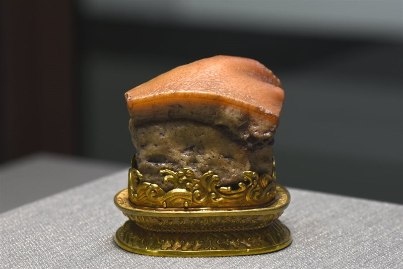

Tugas tentang National Palace Museum
IPS mempelajari sejarah tempat yang dikunjungi serta budaya setempat. Saya sangat tertarik dari salah satu artefak di National Palace Museum yaitu Meat Shaped Stone.
Artefak tersebut menunjukkan bahwa masyarakat pada zaman itu sangat menghargai seni dan kerajinan tangan. Mereka punya keterampilan tinggi untuk membuat benda-benda yang sangat detail dan mirip dengan benda asli, seperti daging. Ini juga menunjukkan bahwa makanan adalah bagian penting dalam kehidupan dan simbol kemakmuran di masa itu.
